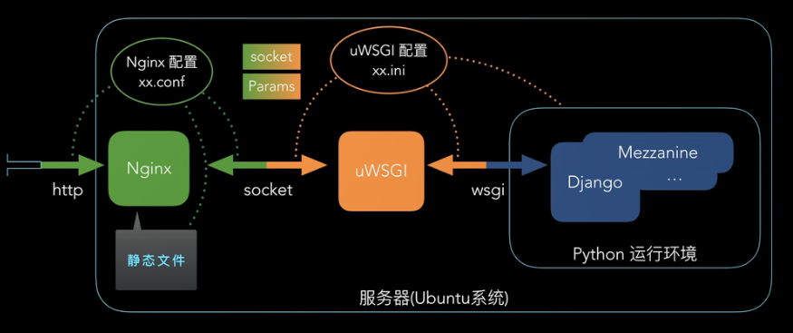
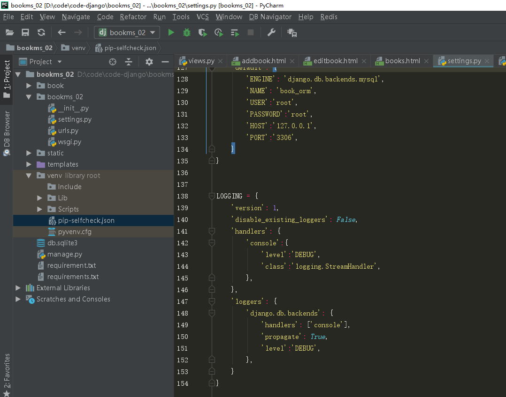
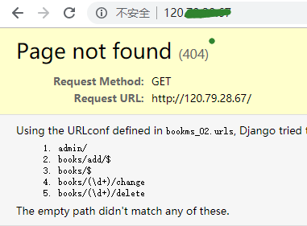

3. django项目部署
Django项目部署
1. 介绍¶
uWSGI是一个Web服务器，它实现了WSGI协议、uwsgi、http等协议。Nginx中HttpUwsgiModule的作用是与uWSGI服务器进行交换。 要注意 WSGI / uwsgi / uWSGI 这三个概念的区分。
WSGI是一种Web服务器网关接口。它是一个Web服务器（如nginx，uWSGI等服务器）与web应用（如用Flask框架写的程序）通信的一种规范。 uwsgi是一种线路协议而不是通信协议，在此常用于在uWSGI服务器与其他网络服务器的数据通信。而uWSGI是实现了uwsgi和WSGI两种协议的Web服务器。
uwsgi协议是一个uWSGI服务器自有的协议，它用于定义传输信息的类型（type of information），每一个uwsgi packet前4byte为传输信息类型描述，它与WSGI相比是两样东西。
2. 原理¶


- 首先客户端请求服务资源，
- nginx作为直接对外的服务接口,接收到客户端发送过来的http请求,会解包、分析，
- 如果是静态文件请求就根据nginx配置的静态文件目录，返回请求的资源，
- 如果是动态的请求,nginx就通过配置文件,将请求传递给uWSGI；uWSGI 将接收到的包进行处理，并转发给wsgi，
- wsgi根据请求调用django工程的某个文件或函数，处理完后django将返回值交给wsgi，
- wsgi将返回值进行打包，转发给uWSGI，
- uWSGI接收后转发给nginx,nginx最终将返回值返回给客户端(如浏览器)。
3. windows端操作¶
3.1 项目打包¶


3.2 导出依赖¶
pip freeze > requirements.txt （windows我测试失败。我直接pip list 然后编辑文件到 requirements.txt） 格式如下： (venv) [root@leco bookms]# cat requirements.txt asn1crypto==0.24.0 cffi==1.11.5 cryptography==2.4.2 Django==2.1.4 idna==2.8 pycparser==2.19 PyMySQL==0.9.2 pytz==2018.7 setuptools==39.1.0 six==1.12.0
3.3 上传到服务器¶
最好是放在nginx的指定的家目录下，我放在了如下路径。
(venv) [root@leco bookms]# pwd /usr/share/nginx/html/bookms
4. Linux端操作¶
4.1 安装nginx¶
-
ubuntu 系统
[root@leco etc]# apt-get install nginx
-
centos系统
[root@leco etc]# yum install nginx
4.2 安装python¶
4.2.1 下载¶
[root@leco ~]# wget https://www.python.org/ftp/python/3.7.1/Python-3.7.1.tgz
4.2.2 解压¶
[root@leco ~]# tar xf Python-3.7.1.tgz
4.2.2 编译安装¶
[root@leco ~]# cd Python-3.7.1 [root@leco Python-3.7.1]# ./configure && make && make install
4.2.3 测试¶
[root@leco Python-3.7.1]# python3 -V Python 3.7.1 [root@leco Python-3.7.1]# pip3 -V pip 10.0.1 from /usr/local/lib/python3.7/site-packages/pip (python 3.7)
4.3 安装虚拟环境¶
[root@leco Python-3.7.1]# pip3 install virtualenv
4.4 虚拟环境¶
找到项目的根目录，删除windows自带的虚拟环境，重新创建和安装包
[root@leco bookms]# ls book bookms_02 db.sqlite3 manage.py requirements.txt static templates venv
[root@leco bookms]# rm -rf venv [root@leco bookms]# virtualenv venv
[root@cairui bookms]# source venv/bin/activate (venv) [root@cairui bookms]#
进入虚拟环境后前面会多(venv),(venv)是虚拟环境的名字。
(venv) [root@leco bookms]# pip install -r requirements.txt (venv) [root@leco bookms]# pip list Package Version ------------ ------- asn1crypto 0.24.0 cffi 1.11.5 cryptography 2.4.2 Django 2.1.4 idna 2.8 pip 18.1 pycparser 2.19 PyMySQL 0.9.2 pytz 2018.7 setuptools 39.1.0 six 1.12.0 wheel 0.32.3
5. 配置¶
5.1 访问设置¶
(venv) [root@leco bookms]# vim bookms_02/settings.py ALLOWED_HOSTS = ['*']
地址限制
星号表示不限制访问的IP地址
5.2 数据配置¶
(venv) [root@leco bookms]# vim bookms_02/settings.py
DATABASES = {
'default': {
'ENGINE': 'django.db.backends.mysql',
'NAME': 'book_orm',
'USER':'root',
'PASSWORD':'root',
'HOST':'127.0.0.1',
'PORT':'3306',
}
}
配置参数详解
'ENGINE': 'django.db.backends.mysql', 使用mysql数据库 'NAME': 'book_orm', 指定数据库名，需要手动先创建 'USER':'root', 数据库登录用户名 'PASSWORD':'root', 数据库登录用户名对应的密码 'HOST':'127.0.0.1', mysql数据库的IP地址。 'PORT':'3306', mysql端口
6.创建数据库¶
6.1 创建数据库¶
[root@leco Python-3.7.1]# mysql -uroot -p Enter password: Welcome to the MySQL monitor. Commands end with ; or \g. Your MySQL connection id is 4 Server version: 5.6.42 MySQL Community Server (GPL) Copyright (c) 2000, 2018, Oracle and/or its affiliates. All rights reserved. Oracle is a registered trademark of Oracle Corporation and/or its affiliates. Other names may be trademarks of their respective owners. Type 'help;' or '\h' for help. Type '\c' to clear the current input statement. mysql> create database book_orm DEFAULT CHARACTER SET utf8 COLLATE utf8_general_ci;
6.2 数据迁移¶
数据表创建
(venv) [root@leco bookms]# ls book bookms_02 db.sqlite3 manage.py requirements.txt static templates venv (venv) [root@leco bookms]# python3 manage.py makemigrations (venv) [root@leco bookms]# python3 manage.py migrate
区别
python manage.py makemigrations makemigrations会在当前目录下生成一个migrations文件夹，该文件夹的内容就是数据库要执行的内容 python manage.py migrate migrate就是执行之前生成的migrations文件，这一步才是操作数据库的一步
6.3 测试¶
(venv) [root@leco bookms]# python3 manage.py runserver 0.0.0.0:7000
Performing system checks...
System check identified no issues (0 silenced).
(0.000) SELECT @@SQL_AUTO_IS_NULL; args=None
(0.000) SET SESSION TRANSACTION ISOLATION LEVEL READ COMMITTED; args=None
(0.001) SHOW FULL TABLES; args=None
(0.003) SELECT `django_migrations`.`app`, `django_migrations`.`name` FROM `django_migrations`; args=()
December 24, 2018 - 07:16:02
Django version 2.1.4, using settings 'bookms_02.settings'
Starting development server at http://0.0.0.0:7000/
Quit the server with CONTROL-C.
新开一个终端测试
[root@leco Python-3.7.1]# curl 127.0.0.1:7000
<!DOCTYPE html>
<html lang="en">
<head>
<meta http-equiv="content-type" content="text/html; charset=utf-8">
<title>Page not found at /</title>
<meta name="robots" content="NONE,NOARCHIVE">
<style type="text/css">
html * { padding:0; margin:0; }
body * { padding:10px 20px; }
body * * { padding:0; }
body { font:small sans-serif; background:#eee; color:#000; }
body>div { border-bottom:1px solid #ddd; }
h1 { font-weight:normal; margin-bottom:.4em; }
h1 span { font-size:60%; color:#666; font-weight:normal; }
table { border:none; border-collapse: collapse; width:100%; }
td, th { vertical-align:top; padding:2px 3px; }
th { width:12em; text-align:right; color:#666; padding-right:.5em; }
#info { background:#f6f6f6; }
#info ol { margin: 0.5em 4em; }
#info ol li { font-family: monospace; }
#summary { background: #ffc; }
#explanation { background:#eee; border-bottom: 0px none; }
</style>
</head>
<body>
<div id="summary">
<h1>Page not found <span>(404)</span></h1>
<table class="meta">
<tr>
<th>Request Method:</th>
<td>GET</td>
</tr>
<tr>
<th>Request URL:</th>
<td>http://127.0.0.1:7000/</td>
</tr>
</table>
</div>
<div id="info">
<p>
Using the URLconf defined in <code>bookms_02.urls</code>,
Django tried these URL patterns, in this order:
</p>
<ol>
<li>
admin/
</li>
<li>
books/add/$
</li>
<li>
books/$
</li>
<li>
books/(\d+)/change
</li>
<li>
books/(\d+)/delete
</li>
</ol>
<p>
The empty path didn't match any of these.
</p>
</div>
<div id="explanation">
<p>
You're seeing this error because you have <code>DEBUG = True</code> in
your Django settings file. Change that to <code>False</code>, and Django
will display a standard 404 page.
</p>
</div>
</body>
</html>
6.4 创建配置文件¶
(venv) [root@leco bookms]# mkdir conf
(venv) [root@leco bookms]# mv bookms.conf socket.xml uwsgi.ini uwsgi_params conf/
(venv) [root@leco conf]# cat bookms.conf
upstream django {
# server unix:///path/to/your/mysite/mysite.sock; # for a file socket
# 设置本地服务的端口
server 127.0.0.1:8000; # for a web port socket (we'll use this first)
}
server{
listen 80;
server_name localhost;
charset utf-8;
access_log off;
location /static {
alias /usr/share/nginx/html/bookms/static; # 要与之前django的setting.py中添加的static静态文件转移目录一致
}
location / {
uwsgi_pass django;
include /usr/share/nginx/html/bookms/conf/uwsgi_params;
}
}
(venv) [root@leco conf]# cat socket.xml
<uwsgi>
<socket>:8000</socket>
<chdir>/usr/share/nginx/html/HelloWorld</chdir>
<module>hello.wsgi</module>
<processes>4</processes> <!-- 进程数 -->
<daemonize>uwsgi.log</daemonize>
</uwsgi>
(venv) [root@leco conf]# cat uwsgi.ini
[uwsgi]
# Django-related settings
# Django项目本地端口
socket = :8000
# 项目根目录位置
chdir = /usr/share/nginx/html/bookms
# wsgi.py文件在项目的中的相对位置
wsgi-file = /usr/share/nginx/html/bookms/bookms_02/wsgi.py
module =bookms.wsgi
# 进程设置，无需变动
# master
master = true
# maximum number of worker processes
# 启动4个uwsgi进程
processes = 4
# ... with appropriate permissions - may be needed
# chmod-socket = 664
# clear environment on exit
vacuum = true
pidfile=uwsgi.pid
daemonize=uwsgi.log
(venv) [root@leco conf]# cat uwsgi_params # 这个是固定的文件，
uwsgi_param QUERY_STRING $query_string;
uwsgi_param REQUEST_METHOD $request_method;
uwsgi_param CONTENT_TYPE $content_type;
uwsgi_param CONTENT_LENGTH $content_length;
uwsgi_param REQUEST_URI $request_uri;
uwsgi_param PATH_INFO $document_uri;
uwsgi_param DOCUMENT_ROOT $document_root;
uwsgi_param SERVER_PROTOCOL $server_protocol;
uwsgi_param REQUEST_SCHEME $scheme;
uwsgi_param HTTPS $https if_not_empty;
uwsgi_param REMOTE_ADDR $remote_addr;
uwsgi_param REMOTE_PORT $remote_port;
uwsgi_param SERVER_PORT $server_port;
uwsgi_param SERVER_NAME $server_name
(venv) [root@leco conf]# ls
bookms.conf socket.xml uwsgi.ini uwsgi_params
(venv) [root@leco conf]# pwd
/usr/share/nginx/html/bookms/conf
7. 安装调试uwsgi¶
(venv) [root@leco conf]# pip3 install uwsgi Looking in indexes: http://mirrors.cloud.aliyuncs.com/pypi/simple/ Collecting uwsgi Installing collected packages: uwsgi Successfully installed uwsgi-2.0.17.1 (venv) [root@leco conf]# uwsgi --ini uwsgi.ini [uWSGI] getting INI configuration from uwsgi.ini (venv) [root@leco conf]# ls bookms.conf socket.xml uwsgi.ini uwsgi.log uwsgi_params uwsgi.pid (venv) [root@leco conf]# ps axf|grep uwsgi 2589 pts/0 S+ 0:00 | \_ grep uwsgi 31935 ? S 0:00 uwsgi --ini uwsgi.ini 31936 ? S 0:00 \_ uwsgi --ini uwsgi.ini 31937 ? S 0:00 \_ uwsgi --ini uwsgi.ini 31938 ? S 0:00 \_ uwsgi --ini uwsgi.ini 31939 ? S 0:00 \_ uwsgi --ini uwsgi.ini
注意
uwsgi在哪个目录启动，就会在哪个目录生成uwsgi.pid和uswgi.log文件。 启动：uwsgi --ini uwsgi.ini 停止：uwsgi --stop uwsgi.pid 重启：uwsgi --reload uwsgi.pid 强制停止：killall -9 uwsgi 这里我们启动uwsgi服务，可以通过ps -ef | grep uwsgi看到已经有四个uwsgi服务启动。
/usr/share/nginx/html/bookms/conf (venv) [root@leco conf]# pwd /usr/share/nginx/html/bookms/conf (venv) [root@leco conf]# ln -sf /usr/share/nginx/html/bookms/conf/bookms.conf /etc/nginx/conf.d/ (venv) [root@leco conf]# ll /etc/nginx/conf.d/ total 8 lrwxrwxrwx 1 root root 45 Dec 24 15:27 bookms.conf -> /usr/share/nginx/html/bookms/conf/bookms.conf (venv) [root@leco conf]# /etc/init.d/nginx configtest nginx: the configuration file /etc/nginx/nginx.conf syntax is ok nginx: configuration file /etc/nginx/nginx.conf test is successful (venv) [root@leco conf]# /etc/init.d/nginx restart Stopping nginx: [ OK ] Starting nginx: [ OK ] (venv) [root@leco conf]#
8. 浏览器测试¶


9. 汇总配置文件¶
9.1 books.conf¶
upstream django {
# server unix:///path/to/your/mysite/mysite.sock; # for a file socket
# 设置本地服务的端口
server 127.0.0.1:8000; # for a web port socket (we'll use this first)
}
server{
listen 80;
server_name localhost;
charset utf-8;
access_log off;
location /static {
alias /usr/share/nginx/html/bookms/static; #要与之前django的setting.py中添加的static静态文件转移目录一致
}
location / {
uwsgi_pass django;
include /usr/share/nginx/html/bookms/conf/uwsgi_params;
}
}
9.2 socket.xml¶
<uwsgi>
<socket>:8000</socket>
<chdir>/usr/share/nginx/html/HelloWorld</chdir>
<module>hello.wsgi</module>
<processes>4</processes> <!-- 进程数 -->
<daemonize>uwsgi.log</daemonize>
</uwsgi>
9.3 uwsgi.ini¶
[uwsgi] # Django-related settings # Django项目本地端口 socket = :8000 # 项目根目录位置 chdir = /usr/share/nginx/html/bookms # wsgi.py文件在项目的中的相对位置 wsgi-file = /usr/share/nginx/html/bookms/bookms_02/wsgi.py module =booksms.wsgi # 进程设置，无需变动 # master master = true # maximum number of worker processes # 启动4个uwsgi进程 processes = 4 # ... with appropriate permissions - may be needed # chmod-socket = 664 # clear environment on exit vacuum = true pidfile=uwsgi.pid daemonize=uwsgi.log
9.4 uwsgi_params¶
uwsgi_param QUERY_STRING $query_string; uwsgi_param REQUEST_METHOD $request_method; uwsgi_param CONTENT_TYPE $content_type; uwsgi_param CONTENT_LENGTH $content_length; uwsgi_param REQUEST_URI $request_uri; uwsgi_param PATH_INFO $document_uri; uwsgi_param DOCUMENT_ROOT $document_root; uwsgi_param SERVER_PROTOCOL $server_protocol; uwsgi_param REQUEST_SCHEME $scheme; uwsgi_param HTTPS $https if_not_empty; uwsgi_param REMOTE_ADDR $remote_addr; uwsgi_param REMOTE_PORT $remote_port; uwsgi_param SERVER_PORT $server_port; uwsgi_param SERVER_NAME $server_name;